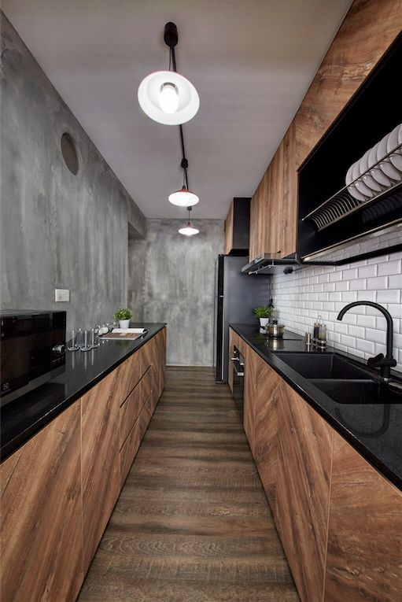
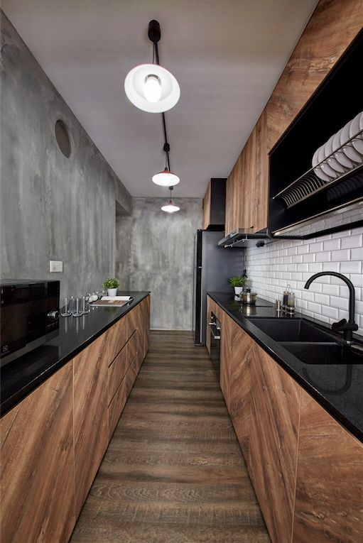

Home
Why kitchen is so important?
We stopped to think about why this might be— here are five reasons that explain why your kitchen is the heart of your home.Good for the mind, body and soul
Food nurtures the mind, body and soul. Without it, we would not survive. The kitchen provides a venue to store and prepare the food and nutrients our bodies need. Today, one in three American kids and teens are overweight or obese, triple the rate in 1963. In fact, childhood obesity is the number one health concern among parents in the United States, topping drug abuse and smoking. You want the best for your family, and it’s comforting to know you can help them develop healthy eating habits early in life that will bring lifelong benefits.Family Fun in the Kitchen
Kitchens also provide a space for fun family activities. Cooking and baking with your family is a great bonding experience. It also gives everyone an opportunity to get a little messy, create new things and learn new recipes.The Entire Family Uses It
In a home, there are many private rooms that only certain family members tend to utilize on a regular basis. Maybe dad loves his office, and the kids their playroom. However, each member of the family utilizes the kitchen every day. In recent years, families have begun to adapt their kitchens to provide a more supportive environment in which to congregate. For example, family computers have started to make their way into kitchens so kids can work on their homework while dinner is being made and parents can check a few items off their to-do list while still being in the kitchen with their loved ones. Because of this shift in kitchen dynamics, it is important your kitchen space is designed to be welcoming and conducive for family members to congregate.It’s a Must-Have
Every home has a kitchen. It’s required. No other room other then the bathroom serves such a distinct purpose. Having a functional and modern kitchen is truly a blessing. It helps turn meal preparation into a pleasurable activity amidst the busy hustle and bustle of life.It Sets the Tone
People invest a lot into kitchen upgrades because it is the most important room when it comes to the resale value of the home. Kitchens set the tone for the entire house. They have the ability to not only provide a meal but a complete experience. An inspiring space can mean the difference between a mediocre day and a fantastic day. For those not looking to renovate the entire kitchen, small upgrades can go a long way. Changing the cabinets and/or countertops can significantly transform the mood in the kitchen.

About us
Welcome to flatwhite.com web site!
We are a manufacturer of highest quality kitchen furniture, from classical to modern and loft style.
The company was established in 2012.
Our desire is to create a kitchen, in which you would
like to stay forever, the kitchen which helps you with your household chores (and turn them into a
pleasure) and which can remain in a good condition for years- kitchen of your dreams, which you will
fall in love with. We stay up to new trends and we let them to inspire us. Our main goal is to
constantly improve ourselves to be able to satisfy our customers.
We are open to individual
approach to clients and to offer them an ideal solution. Our experienced designers will meet your
expectations even in the most complicated and unusual projects. We have a new factory with modern
machinery which ensures high quality furniture. We execute orders in Poland and abroad.
Offer
OUR PORTFOLIO:

 



Contact
Contact us!
email:
flatwhite@contact.comphone:
+48 123 456 789address:
flat white furnitureul. abc 1/2
12-345 Poznań